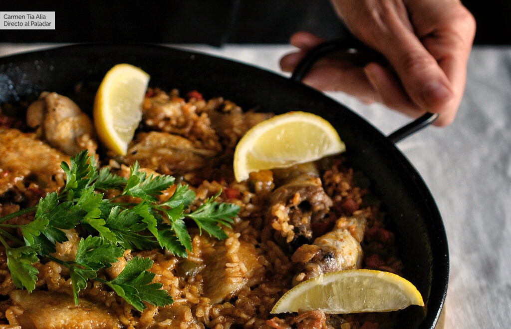

Arroz con pollo

Ingredientes
Para 4 personas
- 250 g pollo troceado
- 400 g arroz bomba
- 1 l caldo de pollo
- 2 diente de ajo
- 100 g pimiento rojo
- 100 g pimiento verde
- 1 tomate maduro
- 5 g pulpa de pimiento choricero
- 150 ml vino blanco
- sal y pimienta
- aceite de oliva
Preparación
- Salpimentamos los trozos de pollo y los rehogamos en una paella de 40 cm de diámetro con un chorretón generoso de aceite de oliva virgen extra.
- Solo queremos que cojan color por fuera, así que, en cuanto se doren ligeramente, los retiramos de la paella y reservamos.
- Pelamos los dientes de ajo y los picamos finamente.
- Añadimos un poco más de aceite a la paella si lo vemos necesario y los rehogamos a fuego suave.
- Antes de que se doren añadimos los dos tipos de pimiento, limpios y troceados en pequeños dados, salpimentamos y continuamos rehogando durante un par de minutos.
- Lavamos bien el tomate, lo cortamos por la mitad y lo rallamos.
- Añadimos a la paella junto con una cucharada de pimiento choricero.
- Removemos y rehogamos un par de minutos.
- Añadimos el vino blanco y dejamos que se evapore el alcochol antes de incorporar el arroz y rehogar, sin parar de mover, durante un minuto más.
- Por último agregamos el pollo a la paella junto con tres vasos del caldo de pollo y subimos el fuego al máximo.
- Reservamos el resto del caldo.
- Removemos bien para repartir el pollo por todo el recipiente y, cuando arranque a hervir el caldo, contamos tres minutos.
- Probamos el punto de sal y lo ajustamos si fuera necesario.
- Transcurrido este tiempo bajamos el fuego y cocemos el arroz con pollo durante 15 minutos sin tocar el arroz, ni remover, ni nada parecido.
- Si el arroz se queda seco de caldo, añadimos el que tenemos reservado poco a poco, pero quizás no sea necesario.
- Pasado el tiempo de cocción apartamos la paella del fuego, tapamos con una paño limpio y dejamos reposar cinco minutos antes de servir.
- Para que el arroz con pollo salga perfecto es importante que la paella sea del diámetro indicado y que el fuego sobre el que lo cocinemos cubra la totalidad de su base.
- Si el fuego es más pequeño que la paella, solo se cocerá el centro y el arroz de los laterales quedará crudo.
- En este caso, si usáis una paella más pequeña que se ajusta a vuestra placa o quemador, reducir las cantidades de ingredientes para que el arroz quede bien esparcido por la base en una capa fina.